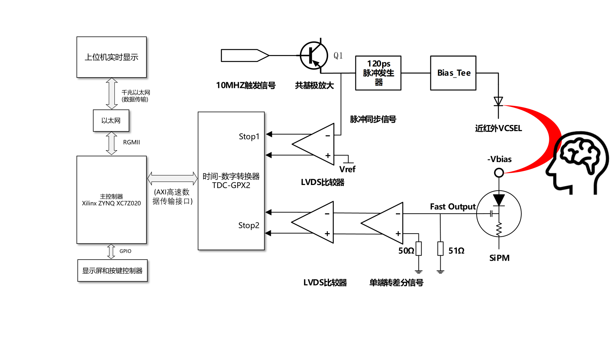
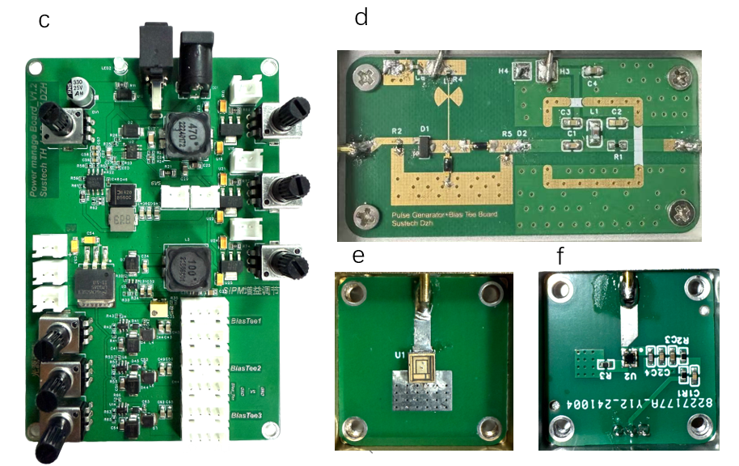
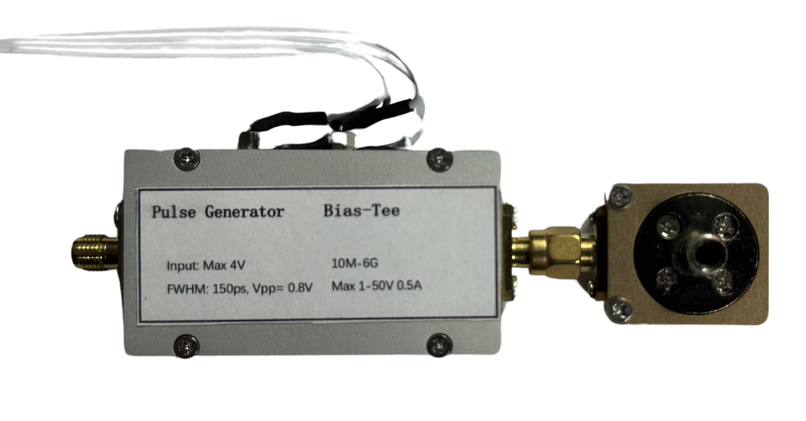
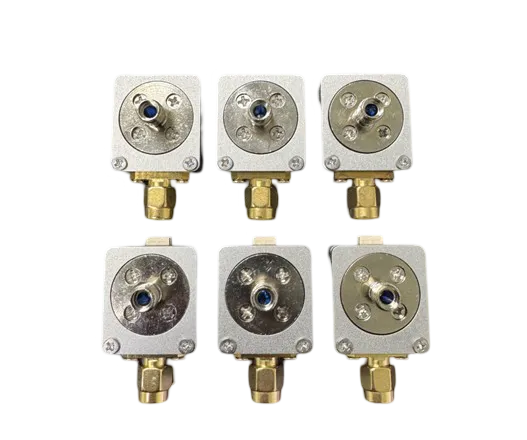
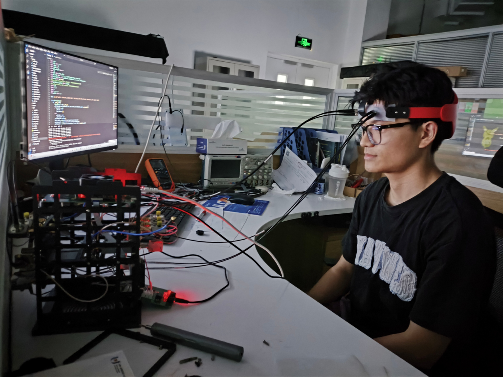
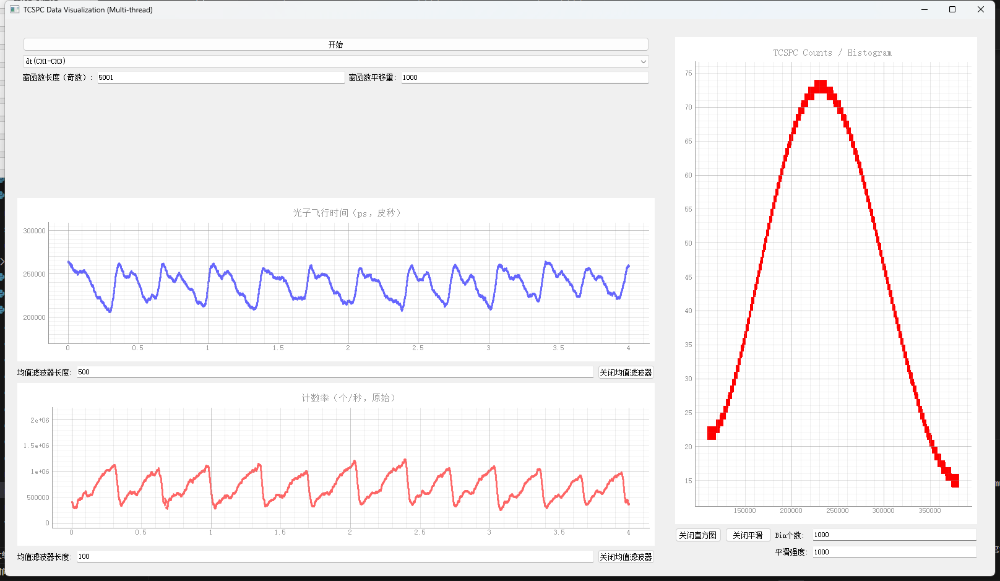
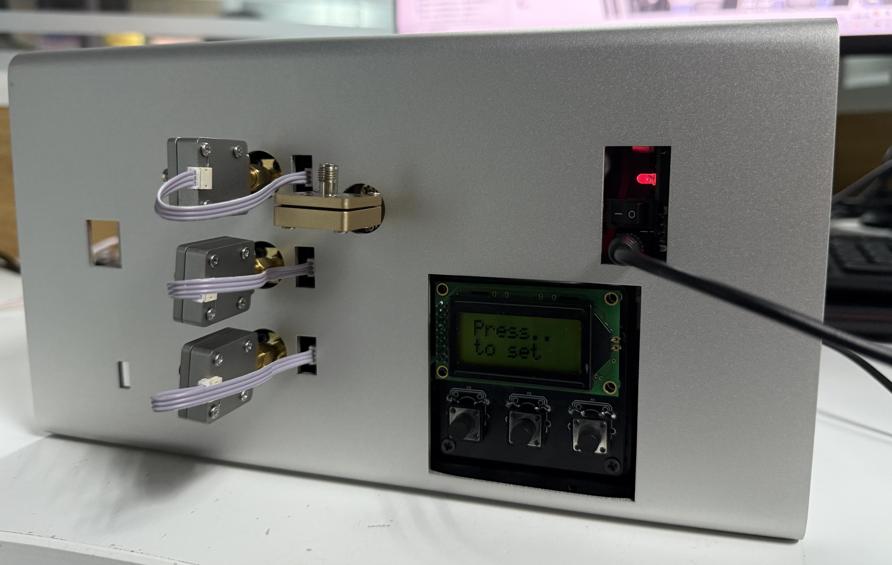
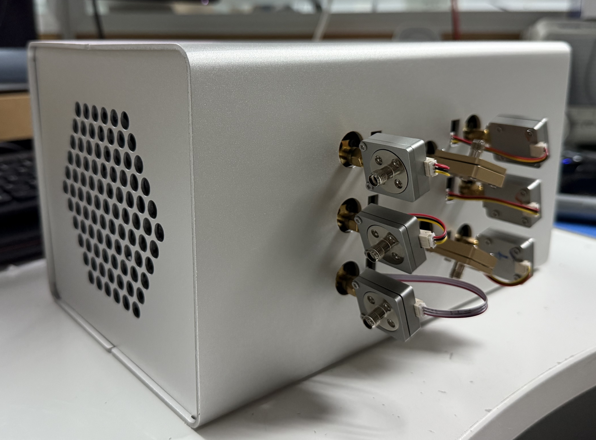

TD-fNIRS瞬态超快单光子计数设备
基于dToF的时域近红外光学脑成像系统
项目概览
本项目致力于开发基于直接时间飞行（dToF）技术的时域近红外光学脑成像系统，通过精确测量皮秒级光子在脑组织中的传输时间，实现对大脑皮层神经活动的高精度成像。该系统采用先进的单光子计数技术和超快电路设计，在时间分辨率和空间分辨率方面均达到了国际领先水平，为神经科学研究和临床诊断提供了强有力的技术支持。
项目数据
12
通道数
200M
采样点/秒
<150
脉宽（ps）
60万
投资金额（元）
技术特色
超快脉冲源设计：基于阶跃恢复二极管（SRD）的高速开关特性，成功设计并实现了脉宽小于150ps的瞬态近红外脉冲光源，为时域成像提供了高质量的激励信号。
高速信号读出：采用LMH3401差分放大器和MAX40026高速比较器的组合方案，实现了边沿时间小于350ps的超快SiPM信号读出电路，相位抖动控制在100ps以内。
精密时间测量：基于TDC-GPX2型时间-数字转换器设计的测量系统，仪器响应函数（IRF）宽度小于50ps，在时间精度方面领先于国际同类TD-fNIRS设备。
高性能数据处理：使用ZYNQ XC7Z020 FPGA搭建SOC系统，自主设计TCSPC信号传输IP核和DDR3高速信号传输逻辑，实现实时数据处理。
多通道并行测量：系统支持12通道并行工作，单通道采样率达到2亿采样点/秒，可实时测量光子飞行时间，满足高密度脑成像需求。
技术架构
光源模块
采用阶跃恢复二极管（SRD）技术，产生高质量皮秒脉冲，结合近红外激光器实现稳定可控的光学激励源。脉冲上升时间优化至150ps以内，为后续时域测量奠定基础。
探测模块
使用硅光电倍增管（SiPM）作为单光子探测器，配合精心设计的前置放大和信号调理电路，实现高灵敏度、低噪声的光子信号检测。
电源管理模块
系统总输入电压为12V电源适配器，包括SiPM偏置电压12V to -38V Cuk，12V to 5.3V Buck，皮秒脉冲发生器电源5.3V to -3.5V 可调Cuk，射频偏置BiasTee 5.3V to 1.5V 可调buck，以及一个5.0V LDO 用于控制面板与散热风扇供电。
时间测量
核心采用TDC-GPX2时间数字转换器，配合高精度时钟和触发电路，实现皮秒级时间分辨率的飞行时间测量，为精确重建光子传输路径提供数据支持。
数据处理
基于ZYNQ异构处理平台，ARM处理器负责系统控制和数据管理，FPGA实现高速数据采集和预处理，确保系统的实时性和可靠性。
项目展示

TD-fNIRS系统整体架构与信号流程

正面 - FPGA高速连接器、Jtag调试、千兆以太网

背面 - SiPM微弱信号处理、TDC信号转换

电源管理、皮秒脉冲发生源、光源、SiPM读出电路

皮秒脉冲光源模块

SiPM单光子探测模块

人脑前额叶实验

实时可视化界面

12通道TD-fNIRS系统原型机

12通道TD-fNIRS系统原型机
项目成果
专利申请： 发明专利 第一发明人 用于时间分辨近红外光谱脑成像设备的瞬态光源模块，公开号：CN120000230A
技术突破：成功研发出仪器响应函数宽度小于50ps的TD-fNIRS系统，在时间分辨率方面达到国际水平。
产业化进展：获得台深创（深圳）科技投资公司60万元投资，推动技术向产业化转化。
性能指标：实现12通道并行测量，单通道采样率达到2亿采样点/秒，满足实时脑成像需求。
应用前景：为神经科学研究、脑功能成像和临床神经诊断提供了强有力的技术支持。